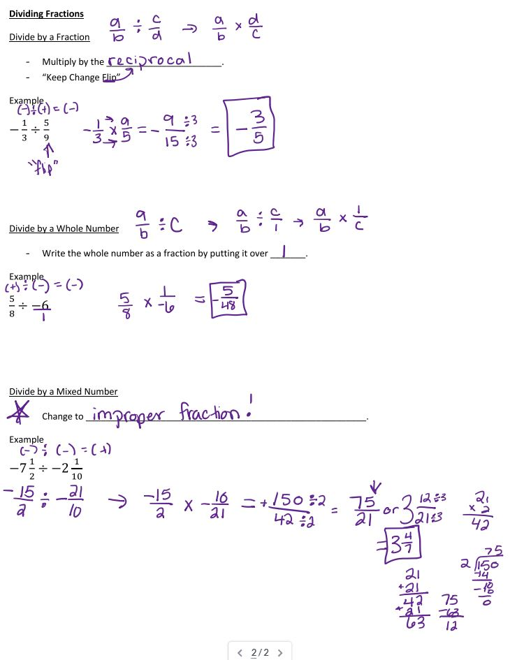
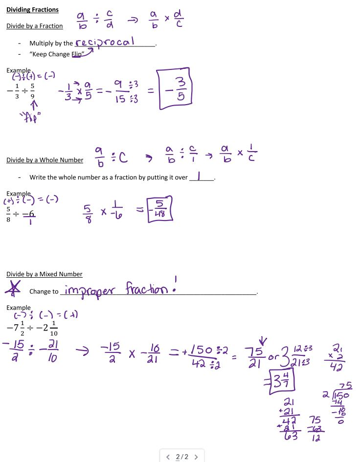

This means that you can multiply and divide integers, decimals, and fractions. You can represent multiplication and division using multiple strategies.
Glossary
Integer
A positive or negative whole number, including zero.
{...-3, -2, -1, 0, 1, 2, 3, ...}
Decimal
A number that has a decimal point followed by digits that show the fractional part.
0.01 (one hundreth)
-45.6 (negative forty-five and six tenths)
Fraction
A number that represents a part of a whole.
2/5 (two fifths)
Rational Number
A number that can be made as a fraction of two integers.
In other words, a/b is a rational number when a and b are numbers like -2, 7, or 123. But be careful: b cannot be zero.


 
